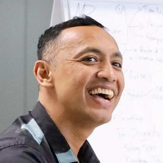
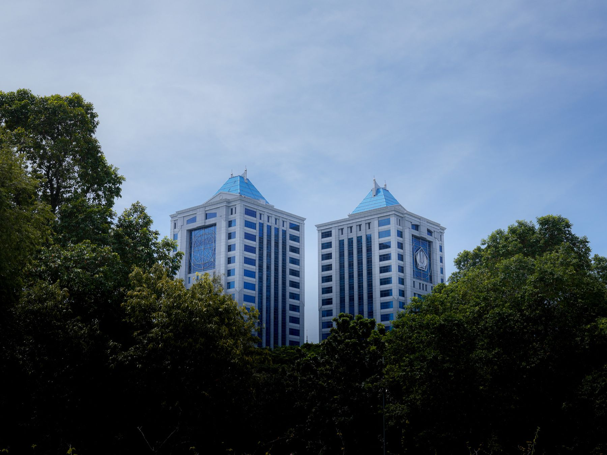

Sekretariat Jenderal Kementerian Keuangan · Webinar 11 November 2026
Pekerjaan minggu ini0
0%
pegawai sudah memakai AI. Sebagian besar baru untuk menyusun naskah dan mencari referensi.Asumsi
Data tersebar di banyak file.
Rekap dikerjakan ulang setiap bulan.
Bahan pimpinan datang terlambat.
Pernah mengalaminya?
Data yang dikelola dengan cerdas, keputusan yang lebih tepat.
Sekretariat JenderalKementerian Keuangan Republik Indonesia
AI LAB SETJEN
Smart Data,Smarter Decisions
Optimalisasi AI dalam Analisis Data dan Pengambilan Keputusan
Rabu, 11 November 202609.00–11.30 WIBMicrosoft Teams · Studio Lt. G Ortalakom

NARASUMBERDonny Maha PutraKepala Bagian Strategi Organisasi dan Proses Bisnis
SESI 1Dukungan administrasi
SESI 2Koordinasi lintas unit
SESI 3Pembinaan berbasis data
SESI 4Kajian untuk pimpinan
Foto: Kemenkeu
Data simulasi · rapat, sidang, dan pembahasan
Rapat menyerap jam kerja terbesar. Sudahkah efektif?
Akumulasi waktu webinar ini
0,0jam-orang
× 0 menit berjalan
RefleksiDari rapat Anda minggu lalu, berapa yang tindak lanjutnya tercatat jelas?Sampaikan jawaban Anda melalui kolom chat.
SebelumBahan dan agenda · Claude
SelamaCatatan otomatis · Copilot
SesudahNotula dan tindak lanjut · Claude
PMK 124 Tahun 2024 · Pasal 9
Setjen mendukung seluruh unit Kemenkeu.

Foto: Setjen Kemenkeu
Koordinasipelaksanaan tugas antarunitSesi 2
Pembinaanorganisasi, SDM, hukum, keuanganSesi 3
Dukungan administrasibagi seluruh unsur organisasi dan pimpinanSesi 1 dan 4
“Sekretariat Jenderal mempunyai tugas menyelenggarakan koordinasi pelaksanaan tugas, pembinaan, dan pemberian dukungan administrasi kepada seluruh unsur organisasi di lingkungan Kementerian.”
Unit eselon I Kemenkeu
Sekretariat Jenderal8 biro
Data simulasi · pola beban kerja
84% jam kerja Setjen berpotensi didukung AI.
Pembanding global
Sudah memakai AI belum tentu berdampak.
88%organisasi sudah memakai AI
±6%yang merasakan dampak nyata
Pembedanya: organisasi yang berdampak hampir 3 kali lebih sering menata ulang alur kerja, bukan sekadar menambah alat.
McKinsey, The State of AI 2025 (survei 1.993 responden).
RefleksiDi unit Anda, AI sudah mengubah alur kerja atau baru mempercepat pengetikan?Sampaikan melalui kolom chat.
Australia · uji coba Copilot 20247.600+ pegawai, hemat ±1 jam per hariPaling terasa untuk merangkum dan menyusun draf. Waktu memeriksa hasil tetap diperlukan. Angka berdasarkan laporan peserta.Digital Transformation Agency
Singapura · asisten AI PairLebih dari separuh dari 150.000 pegawai publikDisediakan pemerintah di lingkungan yang aman, bukan akun pribadi.GovTech Singapura, 2026
Inggris · AI Playbook 202510 prinsip pemakaian AI oleh ASNPahami batas AI, manusia tetap memegang kendali, dan ikuti aturan organisasi.Government Digital Service
Ragam AI
AI andal untuk pegawai, pilih sesuai pekerjaan.
Semuanya dapat dicoba pegawai hari ini. Satu syarat: data rahasia dan data pribadi tidak diunggah ke layanan AI publik.Sumber: GSA OneGov 2025, Dephan AS 2025, DTA Australia 2024, Jakpat 2025.
Mengapa Claude di materi ini? Pilihan pribadi narasumber untuk praktik. Prinsip yang sama berlaku untuk alat lain.
Sesi 1 · Dukungan administrasiSesi 2 · Koordinasi lintas unitSesi 3 · Pembinaan berbasis dataSesi 4 · Kajian untuk pimpinan
✳ Claudebersama Copilot di Microsoft 365
Foto: Setjen Kemenkeu
1
Sesi 1
Dukungan administrasi yang lebih cepat.
Chat yang efektif, Projects, dan Skills.
1Sesi 1Dukungan administrasi
2Sesi 2Koordinasi lintas unit
3Sesi 3Pembinaan berbasis data
4Sesi 4Kajian untuk pimpinan
Chat yang efektifNotula dan tindak lanjut rapatBiro Umum
ProjectsTelaah rancangan peraturanBiro Hukum
SkillsKonsep naskah dinasBiro KLI
Coba langsungNotula dari transkrip rapatPraktik bersama
Simulasi 1 dari 8
Chat yang efektif
Use case dari ABKNotula dan tindak lanjut rapatRapat, sidang, dan risalah: 33% jam kerja Setjen
Penerapan di Biro Umum: notula dan matriks tindak lanjut rapat.
Use case dari ABKTelaah rancangan peraturanBiro Hukum: 83% jam kerja untuk pembahasan dan telaah
Penerapan di Biro Hukum: telaah rancangan dengan acuan peraturan yang tersimpan tetap.
1Instruksi tetap, cukup ditulis sekali
2Acuan diunggah sekali
3Dipakai bersama tim
4Jawaban merujuk sumber
Claude · simulasi
Balas ke Claude…↑
Simulasi 3 dari 8
Skills
Use case dari ABKKonsep naskah dinasKonsep naskah: 20% jam kerja Setjen
Penerapan di Biro KLI: draf jawaban permohonan informasi dengan format baku.
1Skill = SOP untuk AI
2Berisi instruksi dan template
3Dipakai otomatis saat relevan
4Dapat disusun oleh Claude
Claude · simulasi
Balas ke Claude…↑
● Coba langsung
Notula dari transkrip rapat
Perkiraan Anda (tulis di chat): Berapa menit Claude menyusun notula dan tabel tindak lanjut?
00:00
Perhatikan
Claude
Peran: Anda notulis rapat di Sekretariat Jenderal Kementerian Keuangan.
Konteks: Terlampir transkrip rapat koordinasi dan template notula.
Tugas: Susun notula sesuai template. Sebelum mulai, tanyakan yang kurang jelas.
Format: Tindak lanjut dalam tabel: No | Tindak lanjut | Penanggung jawab | Tenggat. Siapkan sebagai file Word.
Batasan: Tulis hanya yang ada di transkrip. Tandai yang tidak jelas dengan [CEK].
Konektor dan AI lainMemantau tindak lanjut lintas unitBiro BMN dan Pengadaan
Word, Excel, PowerPointAnalisis realisasi anggaranBiro Perencanaan dan Keuangan
Coba langsungData ABK menjadi grafik, Word, dan PowerPointPraktik bersama
Simulasi 4 dari 8
Konektor dan AI lain
Use case dari ABKMemantau tindak lanjut lintas unitRapat lintas unit: tindak lanjut tersebar di SharePoint dan Teams
Penerapan di Biro BMN dan Pengadaan: rekap usulan kebutuhan unit dari SharePoint dan Teams.
1Terhubung ke Microsoft 365
2Akses sesuai hak pengguna
3Wajib izin admin
4MCP untuk sistem lain
Claude · simulasi
Balas ke Claude…↑
Simulasi 5 dari 8
Word, Excel, PowerPoint
Use case dari ABKAnalisis realisasi anggaranBiro Perencanaan dan Keuangan: 32% jam kerja untuk telaah dan analisis
Penerapan di Biro Perencanaan dan Keuangan: analisis realisasi anggaran dan bahan paparan pimpinan.
1Keluaran berupa file, bukan teks
2Rumus Excel tetap aktif
3Paparan mengikuti template unit
4Satu permintaan, tiga file
Claude · simulasi
Balas ke Claude…↑
● Coba langsung
Data ABK menjadi grafik, Word, dan PowerPoint
Perkiraan Anda (tulis di chat): Berapa menit dari data Excel hingga paparan 5 slide?
00:00
Perhatikan
Claude · analisis data
Pelajari file ABK ini terlebih dahulu, jelaskan isinya singkat. Lalu hitung kebutuhan pegawai per unit (beban jam ÷ 1.476 jam kerja efektif per tahun) dan bandingkan dengan pegawai yang ada. Tampilkan grafik dan kodenya. Terakhir, buat ringkasan 1 halaman dalam Word dan paparan 5 slide dalam PowerPoint.
Intervensi budaya diarahkan ke unit dengan porsi skor di bawah 80 terbesar.
AI menyiapkan analisis. Keputusan tetap di tangan pimpinan.
Data simulasi. Fokusnya bukan pada angka, tetapi pada alur kerja bersama AI: input, proses, output, lalu keputusan oleh manusia.
● Coba langsung
Cowork merekap 12 laporan unit
Perkiraan Anda (tulis di chat): Berapa menit Claude merekap 12 laporan dan menemukan kesalahannya?
00:00
Perhatikan
Claude Cowork
Folder Input berisi laporan kinerja Triwulan III 2026 dari 12 unit eselon II (data contoh, format Word dan Excel).
1. Rekap semua IKU ke satu Excel: unit, IKU, target, realisasi, capaian dilaporkan, capaian hitung ulang.
2. Tandai angka yang tidak cocok, periode yang salah sebut, dan data yang kosong.
3. Susun ringkasan kinerja Setjen satu halaman dalam Word.
Simpan hasil di folder Output. Tunjukkan rencana kerja terlebih dahulu sebelum mulai.
Claude di web: Research dan ArtifactsBenchmark kebijakan dan aplikasi sederhanaBiro Organta
Coba langsungAplikasi sederhana dalam hitungan menitPraktik bersama
Simulasi 8 dari 8
Claude di web: Research dan Artifacts
Use case dari ABKBenchmark kebijakan dan aplikasi sederhanaTelaah dan analisis: 16% jam kerja Setjen
Penerapan di Biro Organta: pembanding organisasi kementerian lain dan kalkulator beban kerja.
1Pencarian web dengan tautan
2Research untuk kajian mendalam
3Artifacts: aplikasi sederhana
4Dibagikan melalui tautan
Claude · simulasi
Balas ke Claude…↑
● Coba langsung
Aplikasi sederhana dalam hitungan menit
Perkiraan Anda (tulis di chat): Berapa menit hingga aplikasi dapat dicoba di ponsel Anda?
00:00
Perhatikan
Claude Artifacts
Buatkan halaman web interaktif "Kalkulator Kebutuhan Pegawai" untuk pegawai Sekretariat Jenderal Kemenkeu.
- Input: daftar tahapan kerja (nama, norma waktu dalam menit, volume per tahun, jumlah pelaksana). Baris dapat ditambah dan dihapus.
- Hitung: beban = norma × volume × pelaksana; kebutuhan pegawai = total beban ÷ 88.571 menit (jam kerja efektif per tahun).
- Tampilkan kebutuhan dalam angka besar, status kurang/sesuai/lebih, dan grafik tahapan terberat.
- Gaya: biru Kemenkeu dan kuning, bersih.
Jawab di chat Teams: B Boleh · H Hati-hati · J Jangan
Klasifikasikan dataData pribadi dan rahasia tidak diunggah ke AI publik.
Manusia memutuskanAI menyiapkan. Pejabat menandatangani.
Verifikasi sebelum digunakanAngka melalui kode, dasar hukum melalui JDIH.
TransparanCantumkan bila disusun dengan bantuan AI.
Acuan: SE Menkominfo No. 9 Tahun 2023 tentang Etika Kecerdasan Artifisial; UU No. 27 Tahun 2022 tentang Pelindungan Data Pribadi. Empat prinsip di atas merupakan usulan.
Visi · usulan
Setjen 2027: dukungan manajemen berbasis data dan AI.
1
PegawaiAkun AI kedinasan dan kompetensi dasar bagi seluruh pegawai.
2
PengetahuanPustaka Skills dan Projects Setjen di SharePoint.
3
DataABK, kinerja, anggaran terhubung melalui konektor.
4
AgenCowork dan Code menangani rekapitulasi rutin.
5
KeputusanDashboard di Satu Kemenkeu. Pimpinan memutuskan.